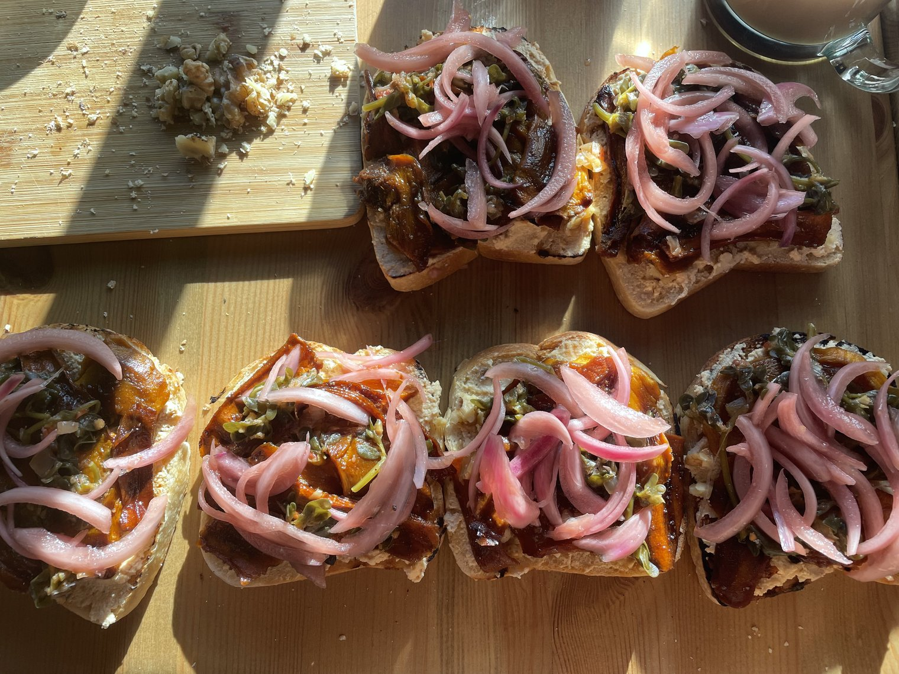

Ideas sandwich para furgo
Ingredients
×
- atún
- pepinillos
- tomates cherry
- alcachofa
- mayonesa
- eneldo
- chucrut
- seitán
- cebolla
- loncha de queso
- tomate
- tofu empanado
- berenjena frita
- pimiento rojo escalivado
- mayonesa de chipotle
- paté de tofu picante
- pesto
- tomate deshidratado
- sriracha
- kimchi de verdolaga
- cebolla encurtida
- nueces
- zanahoria a la brasa
- pepino
- olivas verdes
- queso feta
- tzatziki
- lechuga
- perejil

Preparación
Sandwich 1
Atún: atún + pepinillos + tomates cherry + alcachofa + mayonesa + eneldo + (chucrut?).
Sandwich 2
Seitán: seitán + cebolla + loncha de queso + pepinillos + tomate en rodajas.
Sandwuich 3
Tofu empanado: tofu empanado + berenjena frita + pimiento rojo escalivado + mayonesa de chipotle?
Sandwich 4
Paté de tofu picante: paté de tofu picante + pesto + cebolla + tomate deshidratado. Variante de la foto: paté de tofu con sriracha, kimchi de verdolaga, cebolla encurtida, nueces, zanahoria a la brasa y tomates secos.
Sandwich 5
Griego, tipo pan durum: tomate + pepino + cebolla + olivas verdes + queso feta + tzatziki + lechuga + perejil.